Theorem nonpos_rational_is_rational_nonpos of type Forall¶
from the theory of proveit.numbers.number_sets.rational_numbers¶
see dependencies
In [1]:
import proveit
# Automation is not needed when only building an expression:
proveit.defaults.automation = False # This will speed things up.
proveit.defaults.inline_pngs = False # Makes files smaller.
%load_theorem_expr # Load the stored theorem expression as 'stored_expr'
# import the special expression
from proveit.numbers.number_sets.rational_numbers import nonpos_rational_is_rational_nonpos
In [2]:
# check that the built expression is the same as the stored expression
assert nonpos_rational_is_rational_nonpos.expr == stored_expr
assert nonpos_rational_is_rational_nonpos.expr._style_id == stored_expr._style_id
print("Passed sanity check: nonpos_rational_is_rational_nonpos matches stored_expr")
In [3]:
# Show the LaTeX representation of the expression for convenience if you need it.
print(nonpos_rational_is_rational_nonpos.latex())
In [4]:
nonpos_rational_is_rational_nonpos.style_options()
Out[4]:
In [5]:
# display the expression information
nonpos_rational_is_rational_nonpos.expr_info()
Out[5]:
| core type | sub-expressions | expression | |
|---|---|---|---|
| 0 | Operation | operator: 1 operand: 3 | 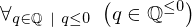 |
| 1 | Literal |  | |
| 2 | ExprTuple | 3 | 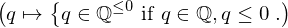 |
| 3 | Lambda | parameter: 18 body: 4 | 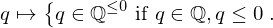 |
| 4 | Conditional | value: 5 condition: 6 | 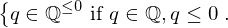 |
| 5 | Operation | operator: 13 operands: 7 | 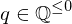 |
| 6 | Operation | operator: 8 operands: 9 | 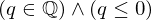 |
| 7 | ExprTuple | 18, 10 | 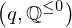 |
| 8 | Literal |  | |
| 9 | ExprTuple | 11, 12 | 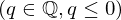 |
| 10 | Literal | 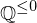 | |
| 11 | Operation | operator: 13 operands: 14 | 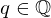 |
| 12 | Operation | operator: 15 operands: 16 | 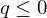 |
| 13 | Literal |  | |
| 14 | ExprTuple | 18, 17 | 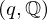 |
| 15 | Literal |  | |
| 16 | ExprTuple | 18, 19 | 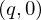 |
| 17 | Literal |  | |
| 18 | Variable |  | |
| 19 | Literal |  |